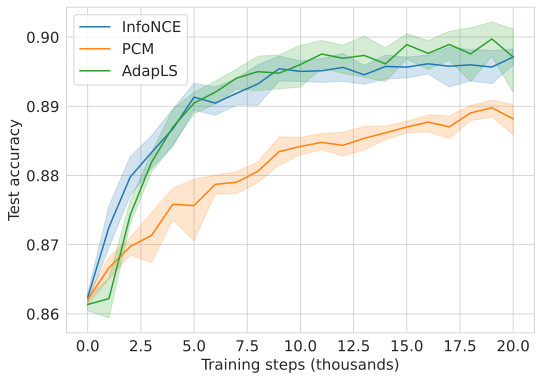

import numpy as np
import seaborn as sns
import pandas as pd
import matplotlib.pyplot as plt
from matplotlib.ticker import MaxNLocator
Plot the test accuracy on MNIST.¶
load the data.
import pickle5 as pickle
with open('./results/mnist_nrun=10_lr=0.0001_batch=128.pkl','rb') as fh:
data = pickle.load(fh)
FONTSIZE = 15
sns.set_style("whitegrid")
plt.rcParams.update({'axes.labelsize': FONTSIZE,
'xtick.labelsize': FONTSIZE,
'ytick.labelsize': FONTSIZE,
'legend.fontsize': FONTSIZE})
cpc_acc = np.array(data.loc[(data['Estimator']=='$CPC$')]['accuracy'])
pcc_acc = np.array(data.loc[(data['Estimator']=='$PCC$')]['accuracy'])
adap_label_pcc_acc = np.array(data.loc[(data['Estimator']=='adap_label_pcc')]['accuracy'])
plt.figure(figsize=[7*1.2,5*1.2])
x_axis = np.tile(np.arange(21),10)
sns.lineplot(x=x_axis,y=cpc_acc, label='InfoNCE')
sns.lineplot(x=x_axis,y=pcc_acc, label='PCM')
sns.lineplot(x=x_axis,y=adap_label_pcc_acc, label='AdapLS')
plt.xlabel('Training steps (thousands)')
plt.ylabel('Test accuracy')
FONTSIZE = 15
sns.set_style("whitegrid")
plt.rcParams.update({'axes.labelsize': FONTSIZE,
'xtick.labelsize': FONTSIZE,
'ytick.labelsize': FONTSIZE,
'legend.fontsize': FONTSIZE})

Plot the test accuracy on CIFAR10.¶
load the data.
import pickle5 as pickle
with open('./results/cifar10_nrun=10_lr=0.0001_batch=128.pkl','rb') as fh:
data = pickle.load(fh)
cpc_acc = np.array(data.loc[(data['Estimator']=='$CPC$')]['accuracy'])
pcc_acc = np.array(data.loc[(data['Estimator']=='$PCC$')]['accuracy'])
adap_label_pcc_acc = np.array(data.loc[(data['Estimator']=='adap_label_pcc')]['accuracy'])
plt.figure(figsize=[7,5])
x_axis = np.tile(np.arange(21),10)
sns.lineplot(x=x_axis,y=cpc_acc, label='InfoNCE')
sns.lineplot(x=x_axis,y=pcc_acc, label='PCM')
sns.lineplot(x=x_axis,y=adap_label_pcc_acc, label='AdapLS')
plt.xlabel('Training steps (thousands)')
plt.ylabel('Test accuracy')
Text(0, 0.5, 'Test accuracy')